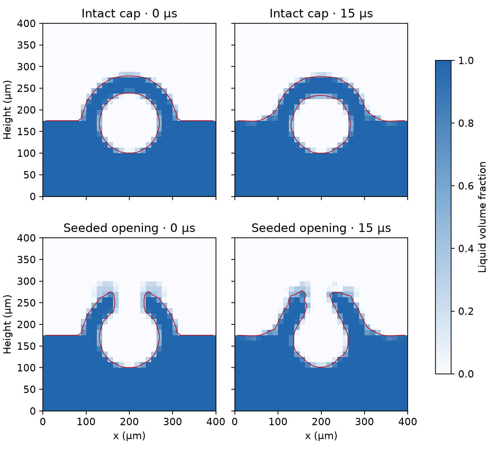

研究对象是原尺寸 F4 杯中射流和停流后的回稳。起点为等温、不可压、无溶解的两种材料。水–空气体系能检验卷气和破膜释气。实际碳酸啤酒若要预测 CO₂ 析出，还要加入溶质输运、界面传质及成核条件。空气卷入、CO₂ 析出和气泡开孔各有自己的质量账。下文的气体体积源以两处气体采用相同的恒定密度为前提。可压缩情况下，交换量应记气体质量，分别由各自压力和状态方程恢复体积。
1. 两相微观方程
令 分别表示液体和气体。相内连续方程、动量方程及应力为
在光滑气液界面 ，取法向 从液体指向气体，。没有物质跨界面时，。连续介质模型采用速度连续条件，界面牵引满足
静止球形液滴满足 ，可据此检查符号。含表面活性剂时用 。表面浓度的输运写为 ，溶液的边界通量与吸附项等量反号。在两界面相距纳米至亚微米、分子作用变得显著的范围，加入受材料约束的界面相互作用能。它对两侧界面施加配对内力。若涨落会显著改变失稳时间，还需由相应物理给出扰动统计。
连续方程决定界面移动，分离压、界面污染和初始扰动影响何时断开或开孔。一个网格尺度触发条件只说明计算在该网格下何时失去界面分辨能力。自由膜失稳 · 自由膜分子模拟 · 泡帽实验
2. 从相指示函数得到等量反号的转换
令 是真实的气体指示函数，。跨界面质量通量为零，因此用分布意义写
再在气体中定义 。按空间尺度 的表示规则，标签 1 是需要进入分散泡表示的气体，标签 0 是由粗 VOF 表示的气体，包括大气和可解析的大气穴。只有对每一批气体设定唯一标签，才能处理物理拓扑转换和网格引起的表示转换。令
气体体积随物质运动。把标签改变写为气体中沿物质轨迹的导数，得到转换项 。标签切换在时空中可能是脉冲。对事件前后的一段时间积分， 就等于这段时间重新标记的气体体积。分散气体与粗网格气体分别取 和 。用固定、归一化的空间滤核 卷积，导数和滤波可交换。若改用自适应滤核，必须处理交换误差和重分网格时的再分类。
其中 、、， 由正、负标签切换分别积累。这里 可以来自新卷气，也可以来自已经卷入的大气穴碎到亚网格。 可以来自真实的泡帽释气，也可以来自小泡聚并成可解析大泡。释气统计只计入与外部大气连通的转移量。 分类本身也含滤宽尺度，跨网格时应按一致的物理定义重新过滤对比。这个推导使用了相指示函数平均。源项的抵消是恒等式，平均后的通量与源项的数值仍需闭合。相平均方程 · 含界面状态的相平均 · 已有三组分双向 VOF
Cirrus 变量满足 。对体积 的固定粗单元 ，令 是一个时间步内生成和释放的气量，单位 。转换子步更新为
析出的液体随液相通量搬运。比如薄膜排液需要迁移液体和相应动量，不能用释气源项顶替。事件写入前受气体供体库存约束，同一份事件量用于两个表示。若源项在不同单元间转移，跨单元部分还要记成成对通量，相应液体位移也进入体积账。释放到大气的气体应通过连通的 PLIC 气相几何实现；在被液体包住的单元减 只会画出一个内部空腔。
对总密度和动量，定义
以同一密度在两种气体表示之间换账，。连续性给出 。从微观方程平均得
这里 是界面应力在单流体方程中的分布力， 是分段体应力。纯重新标记的事件若为分散泡携带独立动量，则两个气体库也要交换同一笔气体动量。一个速度场实现要避免凭转换源给总动量额外加冲量。真正的破膜后流动仍受界面力和压差驱动。漂移或排液存在时，质量通量应由实际相通量组装；不可把所有相的质量都按体积平均速度推进，再额外漂移泡量。VOF 已解析的界面力和亚网格界面力需要一致计入，以免重复计算。守恒 VOF · 质量–动量一致输运 · 自适应 VOF 表面张力
2.1 精确积分与粗状态不能自治闭合的证明
先给定一个微观解。假设气体材料点沿轨迹的标签 在有限时间内具有有界变差。令 为有符号转换测度，并以其正、负变差 分别记正向和反向发生量。每次标签跳变，在事件的时空位置记该材料点携带的气体体积，再对所有气体材料积分。将 代入弱形式，对固定体积 精确积分，得到
同一控制体的 VOF 气体方程右端整体变号。界面释气事件可以是脉冲，用区间积分后的 记账。只有在测度存在局部密度时，才把 写作普通速率函数。积分式没有采用时间离散近似。它给定了事件如何进入守恒律，事件时刻仍取决于微观解。
反例。 取周期区域、无重力、常表面张力。置一个半径 的球形气泡，足够小，可完全放在单个粗单元内。气液都以常速 平移，泡内外压力各为常数，。这是不可压两相方程和界面条件的精确解。构造 A、B 两个初态，仅改变同一单元内的球心位置。两者逐格的 、平均速度、平均压力、界面总面积完全相同。取 ，使 A 的球在 内穿过右侧单元面，B 的球仍留在原格。A 的该面净气量通量为正，B 为零。因此相同的粗初态产生不同的后续粗状态。任何只取当前粗状态作输入的自治方程都会给两者同一个预测，于是至少有一个预测错误。证明不依赖湍流、破裂或数值误差。
拓扑转换还需要更细的信息。光滑速度场的流动映射是同胚，它会保持界面拓扑。光滑锐界面方程能确定奇异事件前的演化。若要继续到夹断或开孔之后，必须给出在该尺度上适用的微观模型，以及模型如何定义事件后的界面。两个积分 也无法重建泡帽最薄点和表面污染物分布。自由膜分子模拟
因此，无粗化近似的求解需要给定完整微观初值、边界条件和界面材料响应，推进微观解，再积分不同气体标签的通量和事件。有限变量的粗 VOF 预测需要额外状态与独立验证过的闭合假设。第 4 节长波方程是可检验的极限模型。
2.2 保留界面位置的跨面气量基准
用半径 0.20 mm 的球泡及 0.10 m/s 的气液同速平移验证。保留两组球心位置、泡径、材料参数和 420 Pa 的解析泡内外压差。连续初态的逐格体积分数相同。2.5 ms 后，近侧气泡穿过格面的气量由球冠公式精确给出，为 0.010602875 mm³。远侧气泡仍在原格内。
| 每轴细网格数 | 近侧气量误差 | 远侧跨面气量 |
|---|---|---|
| 32 | 3.93% | 0 |
| 64 | 1.10% | 0 |
| 128 | 0.285% | 0 |
六组 Cirrus PLIC 测试的最大总气量漂移为 6.46 × 10⁻²⁷ m³。材料参数用于确定解析应力条件，数值对照采用规定速度平移。测试验证了界面位置对粗网格通量的作用。泡帽排液和释气仍待单独求解。
微观连接事件与粗单元更新
令 分别为同一批气体在转换前后的表示标签。标签 1 属于分散泡，标签 0 属于由 VOF 解析的气相。以 标记与顶部外部气体连通的区域。以下积分在界面几何更新后、气体标签切换时计算，跨时间步的流动另由各相面通量计入。
同时包含回到可解析气泡和连通外部气体的事件。只有 记为对外连通的气量。以 更新同一单元的两份气体库存。
事件量受供体库存约束。一次只使用事件前的气量时， 且 。由此保持 非负，同一份气体不会重复计量。内部聚并可改变泡数而保持 ；液膜排液由液相面通量搬运。
曲面泡帽的受控开孔
在 400 µm 的两相小域里比较完整泡帽和初态开孔。孔内液体移到孔缘。两组推进 15 µs，共 407 和 406 步，液量相对误差低于 4 × 10⁻¹⁵。三个气核阈值均识别为完整膜隔离气泡、开孔膜连通外部气体。

开孔时重新归入连通气相的原泡气量为 1.437 nL。配对更新在机器精度内保持液量和总气量。此量是连通后的气体归属变化。完整膜在当前窗口内没有持续减薄，开孔组的峰值面速为 23.84 m/s，尚待加密核验。实际排液、自然开孔和穿过指定截面的气体通量仍需要独立验证。
受控试验另用封闭盒上部控制体的气量变化核对穿过 平面的净气体流动。0–15 µs 内，完整帽为 +15.70 pL，开孔组为 −9.89 pL，正号表示向上。该截面量包含所有气体。要量原泡气体穿过孔口的体积，需使用随气相面通量保守推进的原泡示踪量。完整膜跑至 50 µs 时，连通判断对气核阈值敏感，因此未将这一帧判成自发破膜。
3. 体积和泡数来自同一事件总体
对于分散泡，令 是每单位混合物体积中泡体积在 、到达表面后的泡龄在 内的泡数。实现时可用尺寸分组配少量表面状态，完整分布用于推导闭合。体积和数分别为 、。考虑不可压且无溶解的气体时，群体方程可写成
泡龄进入条件需在到达表面时给出，例如由未接触表面组转入 。脱离表面并重新进入体相的泡需要定义膜状态是否保留。对单纯破膜释气， 是还未开孔的表面泡在单位时间内首次开孔并连通大气的条件风险率。若事件只释放母泡的一部分气体，需用带残留子泡的事件核代替单纯的 ；其体积矩按实际释放比例扣除。
聚并的事件弱式对任意测试函数 的增量是 。取 得 0，取 得 −1。碎裂的增量为 ，只有满足 才在气量账为零。考虑同样大小、数量相同的两组表面泡，一组刚到达，另一组已经排液一段时间。以单一体积 和两组各自的单一泡龄 近似时，两组均有 ，但 。只要泡龄影响风险率，两组释气率就不同。这给出了 普遍闭合不存在的反例。真实模拟若还允许代表尺度的变化，需要另加跨滤宽的源汇，分别记为新卷气、气泡恢复到 VOF 分辨率、实际释气三类。泡数与气量通量 · 波浪碎裂统计 · 泡沫群体平衡先例
4. 小尺度物理和需要计算的量
生成
气穴由外部大气进入射流冲击区，夹断往往先产生可解析的大气穴。之后的颈缩或气膜碎裂才将气量送到亚网格。局部两相 DNS 应以锐利界面追踪气穴连通性、初次夹断、子泡体积和速度。对同一 DNS 用目标滤宽过滤，输出单位面积或体积、单位时间内的转移气量和泡数，以及产生的尺寸谱，区分跨滤宽的碎裂与同一尺度内的泡数变化。射流速度、几何、扰动谱、We、Re、密度和黏度比是控制条件。单个 F4 案例不足以辨识这些参数各自的影响。入水射流卷气实验 · 气膜碎裂的亚网格建模 · 分辨气穴和气丝破碎
排液、失稳与释气
用膜中面坐标 和厚度 。平坦、对称、小坡度、切向近似不动的基准下，横向压强近似均匀，Stokes 方程给出 。在 取 ，两次积分：
对两侧界面的表面积能做小坡度展开，单位中面面积的梯度能为 。若分子相互作用自由能密度为 ，定义 ，厚度的变分压力为
有实际边界时，膜向 Plateau 边界或体相排液的通量由边界条件决定。用 代入，得
若 ，则 ，所以 。存在增长模态时，初始振幅仍需经过有限的增长才形成孔。以上只在限定的边界条件下成立。可动界面要联立界面速度和 Marangoni 应力，曲面泡帽要考虑帽边排液、泡龄和扰动。在无通量或周期边界，上式守恒 ，并满足 。可用这两个诊断区分数值扩散与真实失稳。自由膜长波推导 · 曲率、排液和破裂时间 · 泡帽统计
先用局部两相 DNS 接上这个极限，分别验证泡帽厚度、排液量、开孔位置和首次连通时刻的网格依赖。开孔后记录释气体积随时间的变化，区分整泡排空、残泡和邻泡级联。密集泡沫可能需要膜网络状态，不能把单泡体积源沿所有自由表面简单平均。显式多层 VOF 能让气泡在分辨不到薄膜时保持分隔，但稳定膜的计算本身不提供释气率。薄膜模型可补这个物理环节。Multi-VOF · 薄膜排液与拓扑变化
5. 啤酒杯的数值验收
- 确认纯 VOF 对照从倒入前开始、旧 foam block 关闭、阀关后进液为零，记录液体物理收支。这个基线只校核可解析的射流、液面及气团。
- 用局部 DNS 的体积加权与泡数加权事件率构造 和释气核，并独立验证网格和时间步。薄膜波增长率可以用同目录的数值脚本检查。该脚本积分薄膜方程的限态，尚不是两相 DNS。
- 在粗 VOF 中插入新转换模块，保持气量配对、动量一致和膜液守恒。纯转换时检查 不变并核验 ；内部聚并检查 不变而 变化。要覆盖关阀后仍可能发生的残余射流卷气。
- 在完整杯中比较累计卷气、累计向大气释气、分散气量、液面回稳、泡层高度和泡径分布。分别对照实验或独立高分辨算例，换网格和至少一个射流工况而不重新调闭合参数。旧模型的成片可作历史参考；泡沫的渲染外观不作为物理验收量。
当前实算
采用原算例材料与 1 mm 网格。半尺寸杯 ，从 起算，在 70 ms 关闭进液，512 步到 85 ms，共保存 18 帧。实际写出的累计进液量在关闭后的每一步都保持不变。全域液量账最大相对误差 ，这是离散账本误差。85 ms 的 三种气核识别阈值分别给出 11、6、8 个封闭气核，连通判别基于六邻接，识别数量对阈值敏感。此诊断只处理已有粗网格的气核，用于检查量测定义，不作为生成或释气真值。
在 85 ms 保存场上，以 识别的气核为样本，离线应用一次正向转换并逆转。液相体积分数最大误差 ，总气相体积分数误差为零。这项回放只验证离散转换公式，既没有估算发生率，也没有推进一次在线流体时间步。该帧另用两相 VOF 界面渲染，丢弃了人工散射和微泡。使用空速度占位满足单帧渲染器的输入接口，运动模糊为零，渲染的液面几何取自实际求解场。
原尺寸对照采用 ，从 0 到 5.01 s，在 3.00 s 关闭进液。半尺寸和原尺寸对照都关闭了既有泡沫模型。当前完成的杯中验证覆盖旧模型关闭、关阀、液量守恒和可解析流场。两相薄膜 DNS、生成和释气闭合的在线耦合及其预测验证仍待完成。